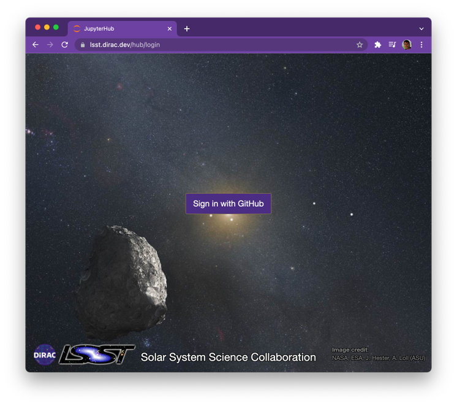
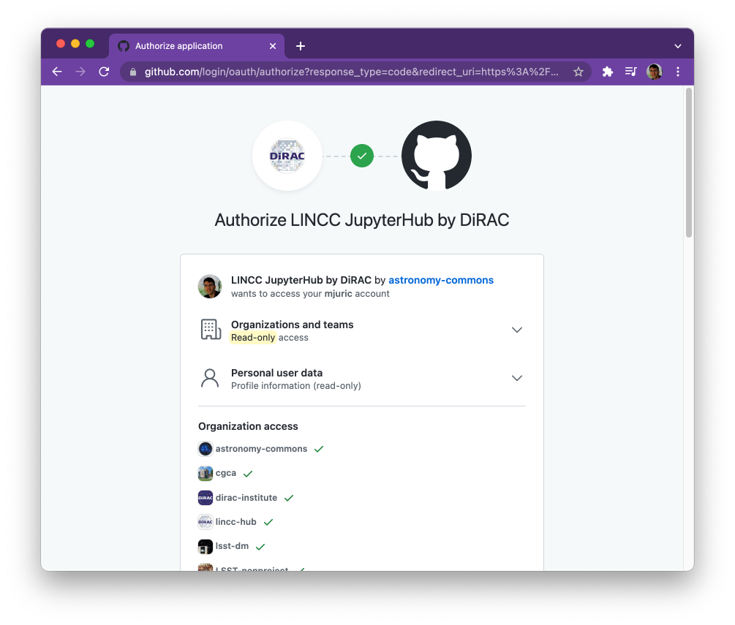
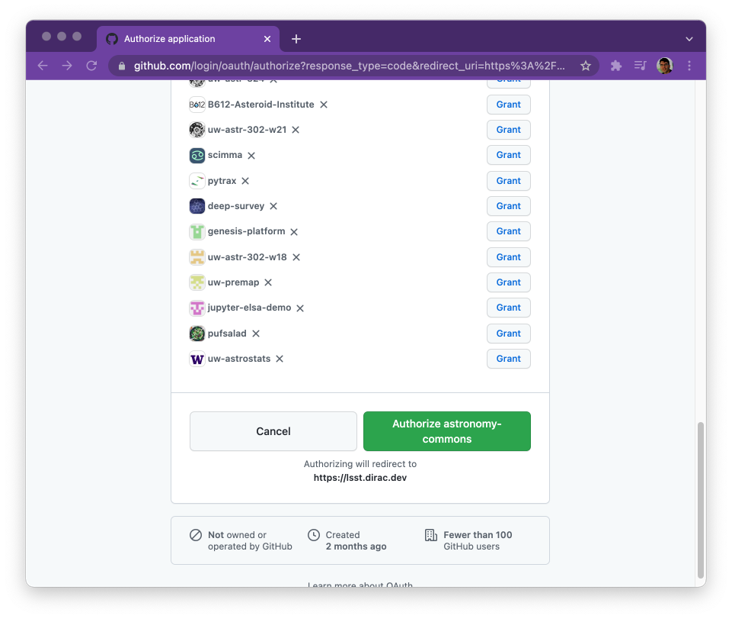

Accessing LINCC JupyterHub
- To log in, you will need:
A GitHub account (https://github.com).
Membership in the
lincc-hubGitHub organization (https://github.com/lincc-hub)
- To get an invitation to join the lincc-hub organization:
Join the
#lincc-hubchannel on LSSTC Slack- Post your github username, and one of our admins will send you an invitation in the next few minutes.
Example message: “Hi, I’d like to get access to LINCC JupyterHub. My github ID is mjuric. Thanks!”
Logging In
Make sure to accept an invitation to join lincc-hub on github!
Go to https://lsst.dirac.dev

The first time you log in, GitHub will ask you to allow access *.

Upon clicking on the green button (left figure), you will be redirected and logged into the Hub

- *
Grant access to organizations you wish to collaborate with within the hub
